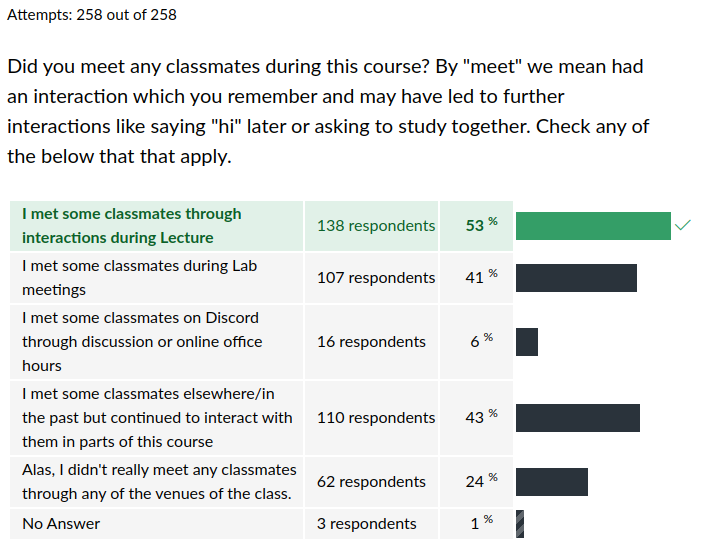

CSCI 2021 Exit Survey Results
Table of Contents
Summary Statistics for Multiple Choice Questions



Freeform Feedback
Frequent Items in Freeform Feedback
| Count | Comment |
|---|---|
| Overall | |
| 2 | Last Unit felt rushed after Exam 3 |
| Exams | |
| 3 | Space is too cramped during exams, need a bigger room |
| 2 | Distribute practice exams earlier |
| Projects | |
| 12 | Projects should be weighted higher in overall grade calculation |
| Labs/HWs | |
| 3 | HW is too easy to click through, no incentive to learn |
| Lecture | |
| Other | |
| 3 | Want a way to track Engagement Points |
| 2 | During Unified Office Hours, try presenting to groups of students |
| 4 | Link Gradescope scores /deadlines to Canvas |
| 2 | More online office hours |
Props to Staff Members
A number of staff members were individually thanked by students in their free-form feedback for help during the semester.
| Thank-yous | Staff Member |
|---|---|
| 3 | Ani |
| 4 | Ash |
| 1 | Aydin |
| 4 | Caroline |
| 1 | David |
| 2 | John |
| 5 | Joon |
| 3 | Maxwell |
| 3 | Mohamed |
| 2 | Ngan |
| 4 | Preeti |
| 5 | Safwan |
| 2 | Sean |
| 4 | Tarik |
| 17 | All TAs |
Notable Freeform Responses
Student comments are given in plain face.
Instructor responses are italicized.
Lectures
- In one of my other classes, there are questions posed during lecture that everyone answers that are evaluated after class. While I realize this may take more time, I do think it's more equitable.
- I really like the idea of engagement points and how the labs were not points on their own, but part of the whole engagement points category.
Office Hours
- I have nothing but praise for how much help was provided to us while we struggled though it. It often wasn't enough for everyone to get help in a timely manner but it was still so amazing of the TAs and also Kauffman who spent so much time in the UOH.
- The lines are ridiculous and I should not have to skip my other classes to spend 4 hours waiting to talk to a TA.
- I think instead of queues for first come first serve it could be like categories and people sign up under it and the Ta holds the specific topic explanation at a certain time.
- I didn't like how busy office hours were this semester, and how people come in early to say they'll be back later which makes them a priority when they return and makes others who are there wait longer.
- During unified office hours, I would spend the entire day there, often over 12 hours (as TAs would stay late and I would come early), yet in that time, I was likely only helped for about 25 minutes cumulative. There were multiple times that I sat in office hours for 3+ hours only to get help for 5 minutes because my question was incredibly basic. Maybe, you give us the ability to spend engagement points to get access to a VIP line?
- I didn't know such intelligent TAs were a thing. Every TA I interacted with explained everything so well. shoutout to the section 7 lab TAs.
- I'd personally prefer if this class had a github as 2041 does where students can commit their work to a repository for TAs to review, either online or in person as to reduce the amount of stress that it puts on students to have their code up and ready to show.
- I really liked going to unified office hours, even if I didn't get help with the problem that I was stuck on, I liked being surrounded by people doing the same thing.
- I thought that the united office hours were really helpful, and having them more often would be helpful to a lot of students. There were many times where I came a half hour before regular office hours started, and wasn't able to even get help before they ended, so the united OH were a nice change.
- I'm a commuter so I would like to have more evening hours online because some days, I have classes all day and got home late, and most TAs have their evening in person so I couldn't attend any of it.
- I really respect the thought and effort that was put into Unified Office Hours, but ultimately I didn't feel like they added any value over having normal office hours. For the 2-3 times I went to a Unified Office Hours, no matter the time I went, it was always flooded with at least a 20-student deep queue
- The throughput issue was a massive turn off for office hours this semester, and there were many times where I decided to just stick it out on my own, researching my errors on stack overflow rather than waiting a significant amount of time for the targeted help. While the TAs help would have been much more helpful than random, semi-related forum posts, it probably would have taken more time to get it than the time I spent flailing around on the internet.
- I don't think there is really a better way to do unified office hours. I mean maybe having extra TAs that only help for those unified office hours so that everyone can get attended to?
- When there's a queue for your OH the help you provide is half-assed! at best a theoretical solution to a small part of project Qs. not sure what the logic behind choosing to help with one of many part problem is but it seems that there was none put into it. counter proposal - fixed time per student and go through all of their Qs and let them decide how that time should best be spent.
- I really like the unified office hour. I'm a TA myself and I feel like OH not only make a really good use of time of TAs but also help students be more engaging in the OH.
Exams
- I think projects should not be due the same week as exams.
- A suggestion is maybe getting a different room for testing. It was challenging to have my laptop or notes out since the desk was tiny.
- If Kauffman could make the exams NOT with ASCII tables it would be much nicer for future students.
The best coders love ASCII tables and diagrams. You should too.
Engagement Points
Projects
- Project 1 and 3 were brutal, but they taught me a lot.
- The bomb was wicked hard.
- Project walk-though videos are helpful. Keep doing them
- Somehow I spent so much time on first project, and I did learn a lot from it.
- This may be unpopular with other students, but keep the difficulty of the projects as it is. Don't make it easier.
- I suggest [more walk-through videos] for future courses. Maybe to have the first one be a walk through or a homework assignment so people can really ease into it and sort of get an idea of how long (minimum) it could take to complete one project.
- I don't know [Project 1] takes that long to finish so I started the project one day before due. I spend 2 Engagement Points but still haven't finish problem 2. It really killed me.
- Stagger the project due dates so that some students have them assigned and due a week earlier and other the week after, that way the load on office hours is more spread out. For fairness, the early/late due date groups would switch for each project, or people could even be allowed to choose which group they would prefer based on their schedule.
- Just simplifying or shortening the projects would be very nice for future students. I definitely believe that the projects could be made significantly less time consuming while remaining just as useful as a teaching tool.
Labs / HW
- I went to labs for awhile, but it ended up being a do-on-your own situation where there were people around if you needed help, but there were no demos, so it was more convenient to do at home. I'm not saying this was bad or good for me, just elaborating on question 9.
- When the TA was going over stuff, students and other TAs were busy already handling the lab so I couldn't really hear or know what the introduction was about.
- Many people, including myself sometimes, would just [click through to] get the points and not care about the homework, because it's the easiest path.
- One suggestion I would make is have a walkthrough for the labs and homework after they are due because I think it can be a valuable resource when studying for midterms.
Miscellaneous
- Best lecture has to be that one on Halloween where Prof. K dressed up as an Intel chip, didn't remember which model it was maybe a Xeon?
- One last question is what operating system is our Prof using on his laptop, never seen it before.
- I went to labs for awhile, but it ended up being a do-on-your own situation where there were people around if you needed help, but there were no demos, so it was more convenient to do at home. I'm not saying this was bad or good for me, just elaborating on question 9.
- It's a huge class and they still manage to provide a very individual learning experience - I had lots of 1:1 time with TAs when I needed it, and many of them encouraged me to reach out to them outside of office hours if I needed additional help.
- Additionally, the multimodal format of the course, with both videos and in-person lectures was AMAZING!
- The main source of stress from this course is that its deadlines match up almost exactly with those of CSCI 2041
- My only comment would be that the workload seems quite large compared to other 4 credit csci courses.
- No one here (not the TA's, nor the professor) ever made you feel stupid for asking a question. Loved it all!
- Overall, this course is so hard for a person with no prior coding experience like me.
- Also Piazza never let me make an account I still don't know why.
I helped two students "create" their Piazza accounts. They both just needed to reset their password. Ask for help from a staff member next time.
- I feel like some people skipped lecture too much and could have done a lot better if they attended lecture regularly, but thats on them i guess.
- By that I mean how 'make' file worked, but I think that's more of a analyzing the code and searching about it myself.
- The Engagement points should not be calculated by log2.
You'd prefer log10?
One-upsmanship
- Kauffman talks too fast to play at 1.5x on videos.
- Kauffman talks too fast to play at 1.5x on videos.
- Yes, Kauffman talks too fast even playing at normal speed!
- 1.5x was just about right for me when watching lectures.
- Kauffman doesn't quite talk fast enough to be played at 1.5x speed.- I do agree that Kauffman talks too fast so I can't really watch the 3 lectures videos I'm behind on on 2x speed.
- While you do talk fast, I can still grasp the content while watching at 1.5x to 2x speed.
Kauffmann does talk too fast to put him on 2x speeds.
Who??
- Umm actually, I watch Kauffman at 2x speed. He is not that fast at all!
- I actually watch his videos on 2x speed and still understand him well
- I was watching the lectures on 2x speed and it was highly entertaining.
- I skipped most of the lectures and tended to watch them later at 2x speed
- The professor talks perfectly normally and one can easily watch at 2 or even 2.5 speed.
- Yeah, professor talks too fast but honestly it doesn't matter because it's like the content were being uploaded directly to my brain before I even try to comprehend.
I feel like I've seen that done somewhere…
- Kauffman talks too fast to play at 100x on videos
Advice to Future Students
- Turn assignments in even if they aren't done/don't pass tests, it'll be better than getting a 0
- If you're like me and struggle to start assignments in advance, try to forget that the 2 late submission days even exist, do not count on them.
- I suggest that future students really consider which courses they take alongside this one. It seemed like this course and two others, that both have professors that like challenging their students daily, liked to butt heads when it came to timing and how much time I should spend for each class.
- Suggestions for other students: definitely take advantage of all the recourses that u have bc you can't fail since everything is provided for you unless u take it for granted.
- If you put in the work, you'll succeed in this class
- Work on projects as soon as they come out because there are many errors and questions towards the end.
What's in a Name?
- …well taught by Coffman.
- …yeah Kauffmann does talk too fast…
- …had classes during Prof. Kaufmann's office hours.
- Thank you, Professor Kaufman.
The Far Side
- Kauffman, Pleaaaaassee, speak slower when in lectures so that students watching in 1.5 speed can digest what you say during the videos.
Just spitballing here, but have you considered watching at normal speed?
- I never thought I could care about hardware…
- great class, wish I hadn't put off taking it so long in my career :(
Good things come to those who procrastinate.
- Best lecture has to be that one on Halloween where Prof. K dressed up as an Intel chip, didn't remember which model it was maybe a Xeon?

- I liked Professor Kauffman's "ranting" because it was relevant and/or funny.
- Unpopular opinion: Assembly was fun.
- I actually liked this class and surprisingly assembly code on proj3 was my favorite.
Not as unpopular as you might think.
- In office hours you take scenic route to get to the point which is not bad if you can speed walk to it and although you may be a man of many talents that's just not one of them. you talk too slow and stop at every nook and cranny!
When you practice curiosity, they journey becomes just as fun as the destination.
- Can't really rant about Kauffman, a peculiar guy
That last guy had plenty to say.
- [Kauffman] is very sassy to students sometimes